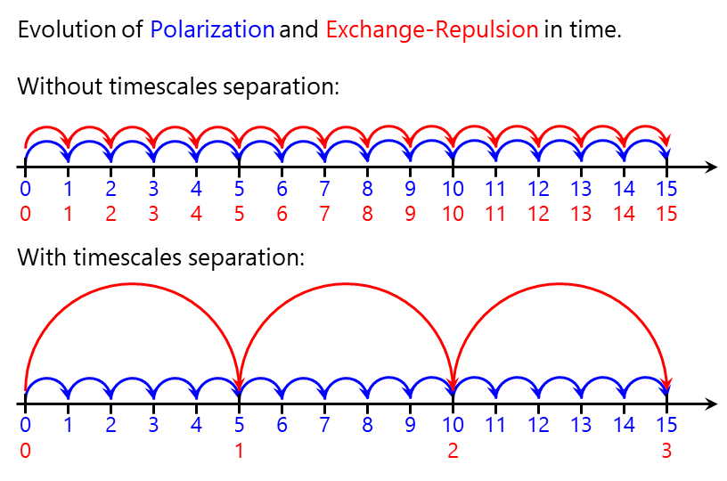
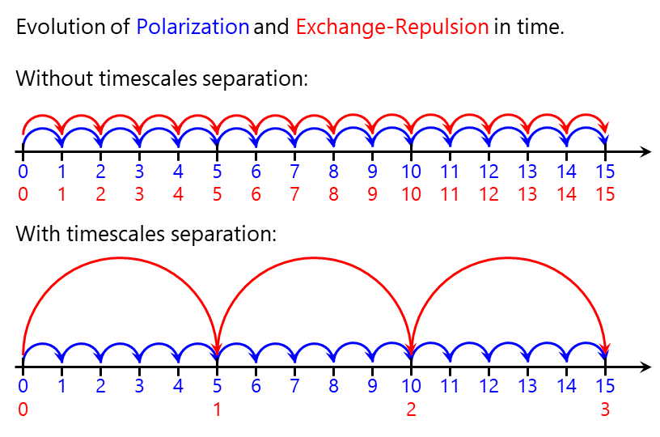

CrystaLattE is a new software tool that automates dual-level parallel computation of lattice energies of molecular crystals. The program is designed with the aim of computing lattice energies accurately enough to discriminate between low energy polymorphs of organic crystals. Our approach uses the many-body expansion approach and exploits the long-range three-dimensional periodic order of crystals to automatically compute lattice energies within chemical accuracy. The code is designed to be connected to the Quantum Chemistry Common Driver and Databases (QCDB) and it leverages some of its unique features. CrystaLattE is also interfaced with the computational chemistry package PSI4, which is employed to execute the energy computations. The code is written in Python 3 and it is distributed as open-source software through GitHub.
A new benchmark database of crystal lattice energies has been generated with CrystaLattE. This database displays a hierarchical scheme, featured in CrystaLattE, that employs the CCSD(T)/CBS method for the most relevant interactions and MP2/aug-cc-pVDZ for more distant interactions. Our database includes small organic molecules contained in other crystal databases and expands them with an additional set of molecular crystals relevant in pharmaceutical and energy-research applications. Benchmark crystal lattice energies of this database are compared with density functional approximations to evaluate its applicability in crystal structure prediction.
The effective fragment potential (EFP) method is a systematic approach to describing intermolecular interactions in an efficient yet rigorous way. EFP is a quantum mechanical based potential that can be thought of as a non-empirical polarizable force field. In this work the time evolution of electrostatic, polarization, dispersion, and exchange-repulsion energies is analyzed in small clusters of water, simulated under the microcanonical ensemble. Based on these results, we explore an approach to accelerate EFP molecular dynamics simulations by exploiting the inherent timescale separation between each of those energy contributions.


Capturing the complexity of water at the molecular scale has been a challenge, a task that has relied on both classical and quantum descriptions of intermolecular interactions. In life and physical sciences, water plays an essential role in the stabilization of biomolecules and acid-base chemical reactions. In addition, insight on the basic mechanisms of ice formation are crucial in the understanding of environmental problems, as well as atmospheric phenomena. However, many classical water models are not adequate for the study of low-temperature systems because they overlook non-pairwise-additive effects, and quantum methods are limited to molecular systems of small dimensions. Theoretical methods that can accurately account for the diverse types of intermolecular interactions existent in water are required. In this project, the thermodynamic equilibrium between water and ice was explored using the EFP molecular dynamics. The melting point of EFP ice was calculated based on the analysis of the evolution of the total energy along simulations in the isothermal-isobaric ensemble at different temperatures.
Hydrogels are materials capable of absorbing water within networks of entangled hydrophilic polymers. They have been widely investigated for their use in materials science, nanotechnology, and novel pharmaceuticals. However, the mechanistic details that explain their water-absorbent features are not well understood. Using all-atom molecular dynamics, the structural transformation due to water absorption in chitosan nano-hydrogels was studied. Two sets of nano-scaled, single-chained chitosan models were simulated: one to study the swelling dependence upon the degree of self-crosslinking, and other to observe the response with respect to the degree of protonation. It was verified that nano-hydrogels keep their ability to absorb water and swell, regardless of their degree of crosslinking. Noteworthy, it was found that the swelling behavior of nano-scaled chitosan is pH-dependent, and it is considerably more limited than that of larger-scale hydrogels. Thus, this study suggests that properties of nanohydrogels are significantly different from those of larger hydrogels. These findings have been recently reported in the The Journal of Physical Chemistry B.


The bioavailability of a high percentage of new drug candidates is limited by their poor solubility. The use of the amorphous form of the drug is a good strategy to improve their solubility. However, the amorphous state is unstable, and the drug will crystallize over time, losing its solubility advantage. Polymers are used to stabilize amorphous formulations, and to maintain high supersaturations following dissolution of the formulation. While experimental studies with commercial polymers show differences in polymer effectiveness, the molecular mechanism of stabilization is still unclear, making the rational design of novel polymers challenging. This collaboration with Dr. Mosquera-Giraldo and Prof. Taylor, explores how chemically diverse substituents influence the effectiveness of novel cellulose polymers as crystallization inhibitors. Molecular dynamics and quantum chemical calculations were used to inquire how chemical diversity modifies the polymer conformation and dynamics. These results help to explain why two polymers with similar chemical groups may show opposite effectiveness due to strong intramolecular non-covalent interactions. These findings have been recently reported in the journal Biomacromolecules.
Bile salts are natural surfactants present in the human gastrointestinal tract. Therefore, it is essential to consider their effect on the dissolution and crystallization tendency of oral drug formulations. Although recently it has been shown that that sodium taurocholate, a common bile salt, can delay nucleation of certain compounds, there is limited information about the crystallization inhibition properties of other bile salts. In this project molecular dynamics simulations were used to assist the evaluation of the ability of several other bile salts to maintain supersaturated aqueous solutions of three drug compounds: celecoxib, nevirapine and fibanserin. Experimentally, most bile salts delayed nucleation. However, their inhibitory effects varied depending on the structure and concentration of the bile salt and the drug. Molecular dynamics simulations indicated that van der Waals and hydrogen bonding interactions occurred between the drug and bile salts, with variations in different systems. These results are important to better understand the crystallization tendency of orally delivered poorly water-soluble compounds in vivo. These findings have been recently reported in the journal Crystal Growth & Design.
The majority of studies evaluating amorphous solid dispersions (ASDs) utilize solvent evaporation techniques as the preparation method. However, the impact of the solvent/co-solvent system properties on the polymer conformation and the phase behavior of the resultant drug-polymer blends is poorly understood. This is an investigation of the influence of solvent properties on the phase behavior of ASDs containing itraconazole (ITZ) and hydroxypropylmethyl cellulose (HPMC) prepared using spin coating from binary/ternary co-solvent systems containing alkyl alcohols, dichloromethane (DCM), and water. The compatibility of the polymer with the co-solvent system was probed using high resolution imaging techniques supported by molecular dynamics simulations. Short chain alcohols, methanol and ethanol, were found to induce drug-polymer de-mixing in the presence of water. In contrast, water-induced mixing was observed when bigger alcohols, n-propanol and n-butanol, were used as a co-solvent. Isopropanol produced phase separated ASDs under wet and dry conditions. This solvent-triggered phase behavior shows the importance of conducting a thorough screening of various solvents prior to the preparation of ASDs. This study highlights the complex interplay of component properties and formation conditions on the resultant ASD microstructure and ultimately, these observations may help in the rational design of ASDs produced via solvent evaporation.


van der Waals forces are essential to determine the structure and properties of biomolecules and materials. They play a fundamental role in fields as diverse as supra-molecular chemistry, structural biology, polymer science, nano-technology, surface science, and condensed matter physics; and provide explanations for chemical, physical, or biological phenomena such as how DNA bases stack, what gives structure to graphite, or why geckos stick to glass. In this collaboration with Dr. Correa, and Dr. Andrade, the derivation of the equations of the Tkatchenko-Scheffler van der Waals method was presented and a portable implementation in C was proposed. In particular, the expressions for the force and the exchange-correlation potential were derived. A code interface for the portable library was designed allowing for modular implementation in codes with different basis set representations. A pilot implementation in the Octopus code is tested and its results validated with other codes for internal consistency. Results are sampled for both ground state and excited state properties.
Most approximations to the exchange-correlation functional of Kohn-Sham Density Functional Theory lead to delocalization errors that undermine the description of charge-transfer phenomena. An exploration of how various approximate functionals and charge-distribution schemes describe ground-state atomic-charge distributions was performed on the lithium-benzene complex, a model system of relevance to carbon-based supercapacitors. To understand the trends, comparisons with Hartree-Fock (HF) and correlated post-HF calculations were carried out, confirming that the HOMO-LUMO gap is narrower in semilocal functionals, but wider in hybrid functionals with large fractions of HF-exchange. In this project we analyze and explain why this happens, discuss implications, and conclude that hybrid functionals with an admixture of about one-fourth of HF-exchange, such as PBE0 or B3LYP, are particularly useful in describing charge transfer in the lithium-benzene model. These findings have been recently reported in The Journal of Physical Chemistry A.
In this collaboration with Dr. Mosquera, Prof. Ratner, and Prof. Schatz, we examine the generalized Kohn-Sham (GKS) theory of hybrid functionals, an extension of the Kohn-Sham theory for electronic ground states that leads to a variety of alternative density functionals intimately related with the local density approximation (LDA). We discuss why the inclusion of Hartree-Fock exchange, and its long-range-corrected form, dominate over the generalized gradient corrections in the improvement of the quality of the fundamental gap and the enhancement excitation-energy estimations. As an illustration of the wide range of possibilities created by our work, we report CAM-LDA0: a three-parameter functional, with 1/4 global and 1/2 long-range Hartree-Fock interaction, respectively; a range separation factor of 1/3; and pure LDA exchange and correlation. CAM-LDA0 works for electronic excitations as well as the CAM-B3LYP functional, with the advantage of reduced computational cost due to the omission of the intricate generalized gradient corrections. These findings have been recently reported in The Journal of Physical Chemistry A.

Carbonyl nitrates are produced from NO3-initiated isoprene oxidation, constituting a potentially important NOx reservoir. In this collaboration with Prof. Shepson's Group, the photochemical degradation process of isoprene carbonyl nitrates is investigated to better understand their fate. In one project the theoretical UV absorption spectra of an isoprene carbonyl nitrate, methacrolein, and n-butyl nitrate in the gas phase were calculated and correlated, using time-dependent density functional theory (TDDFT). These findings were reported in Atmospheric Chemistry and Physics Discussions. In a second project, the possible reaction paths of isobutyl nitrate in water were explored using DFT. Some of these findings have also been recently reported in Atmospheric Chemistry and Physics Discussions.
Carbon nanotubes (CNTs) constitute excellent candidates for the development of new generations of nanoscale sensors, thanks to their attractive electronic, mechanical, and chemical properties. In particular, it has been shown that the functionalization of CNTs with different molecules confers them selectivity for specific species. A computational study of the electronic structure of semiconductor single-walled CNTs, non-covalently functionalized with single strands of DNA, was performed to analyze the response when they were exposed to typical gaseous mixtures. The goal was to evaluate their potential use as transducers of nano-sensors and chemical noses. The electronic response of the transducers was characterized by evaluating the atomic charge distribution and the electrostatic potential difference between the CNT ends. When these model transducers were exposed to atmospheric-like mixtures of nitrogen and oxygen, a partial electron transfer was observed from the CNT towards the oxygen molecules.